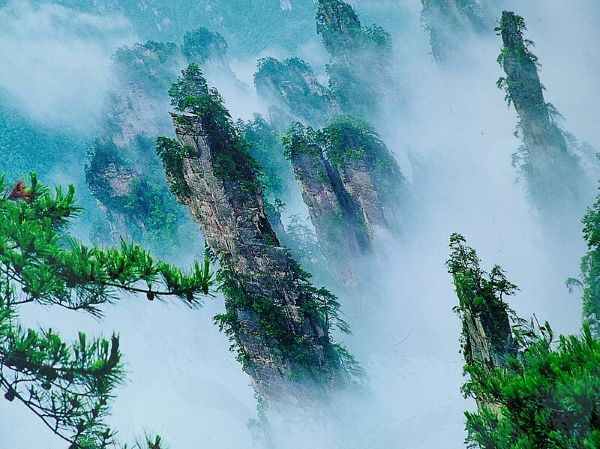
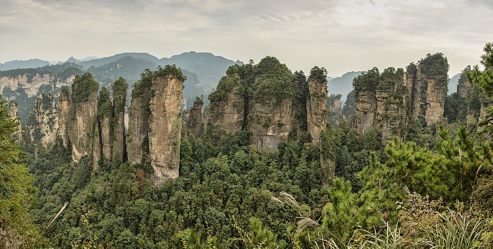
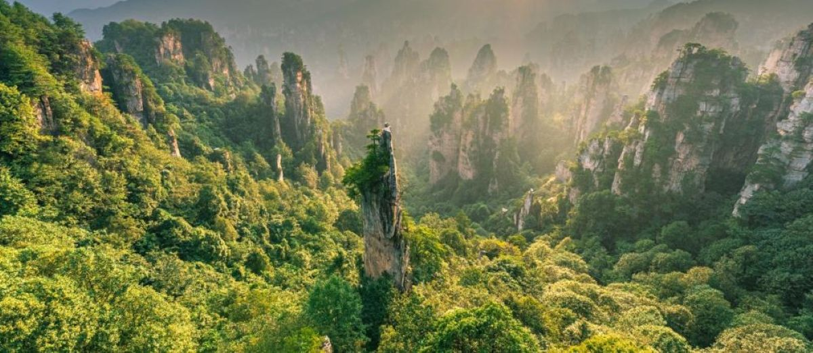
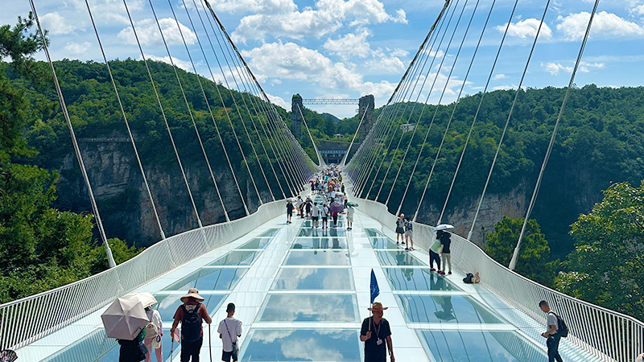
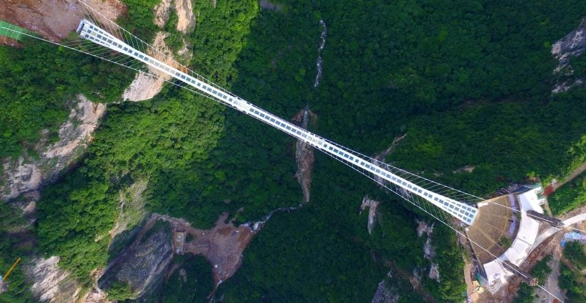

Prices vary depending on the scenic spot you want to visit.
Wulingyuan Scenic Area, or Wulingyuan for short, comprises four major scenic areas: Zhangjiajie National Forest Park, Zhangjiajie National Geopark, and three nature reserves: Suoxiyu, Tianzi Mountain, and Yangjiajie. It covers a total area of approximately 391 square kilometers, with the core scenic area exceeding 250 square kilometers. Wulingyuan boasts a relatively pristine ecosystem, rare sandstone peak forest landforms, karst landscapes, over 3,000 uniquely shaped peaks, more than 800 streams, karst caves, waterfalls, and natural forests. If you have ample time for outdoor activities and scenic enjoyment, this is a good option.
Ticket price: $17.53 (125 yuan).
Zhangjiajie National Forest Park is a national forest park located in Zhangjiajie City, Hunan Province, People's Republic of China. It is one of several national parks within the Wulingyuan Scenic Area. Covering an area of 130 square kilometers, Zhangjiajie National Forest Park was China's first national forest park, established in 1982. Situated in the Wuling Mountains, it boasts over 2,000 stone peaks, a forest coverage rate of 88%, and is surrounded by mountains with a warm and humid climate.
Ticket price: $31.84 (227 yuan).
The Zhangjiajie Glass Skywalk is an elevated walkway bridge located in Wulingyuan District, Zhangjiajie City, Hunan Province, China. Built as a tourist attraction, the bridge has a transparent glass floor. At the time of its completion, it was the longest and highest glass bridge in the world. Officially opened to the public on August 20, 2016, it is 430 meters (1410 feet) long, 6 meters (20 feet) wide, and suspended approximately 300 meters (980 feet) above the ground. The bridge spans a canyon between two cliffs within the Zhangjiajie National Forest Park in northwestern Hunan Province and is designed to accommodate 800 tourists simultaneously. It was designed by Israeli architect Heim Dotan. Standing on it offers panoramic views of the scenery and even the ground beneath your feet, and it certainly tests your courage.
 